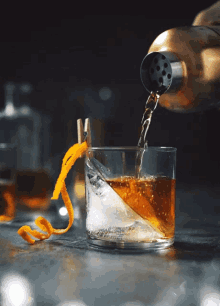

Loki's Home Brewed Mead

What is Loki's Mead?
Loki's mead comes from both the hillsides of Valhalla and Scandinavia.
Loki is originally from Scandinavia and now hails within Valhalla with his brother Thor.
For many years Loki and his brother fought due to Loki's mischief, but here we are.
Now the brothers drink this mead in harmony together at last!
Ingredients to Craft
- 1/2 teaspoon sugar
- 3 dashes Angostura bitters
- 1 teaspoon water
- 2 ounces bourbon (Whatever is preferred)
- Garnish: orange peel
How to Craft
- Add the sugar and bitters to a rocks glass.
- Add the water and stir until the sugar is nearly dissolved.
- Fill the glass with large ice cubes, add bourbon. Gently stir.
- Express the oil of an orange peel over the glass. Then drop in.